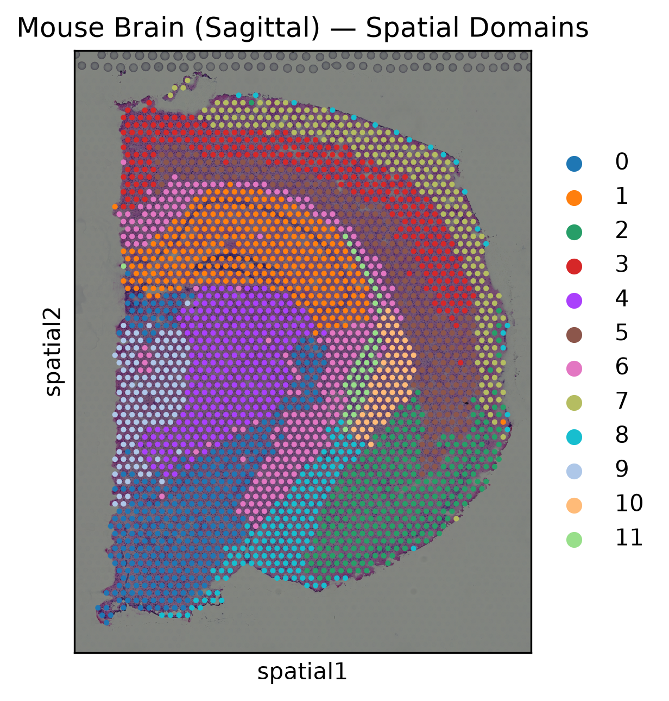
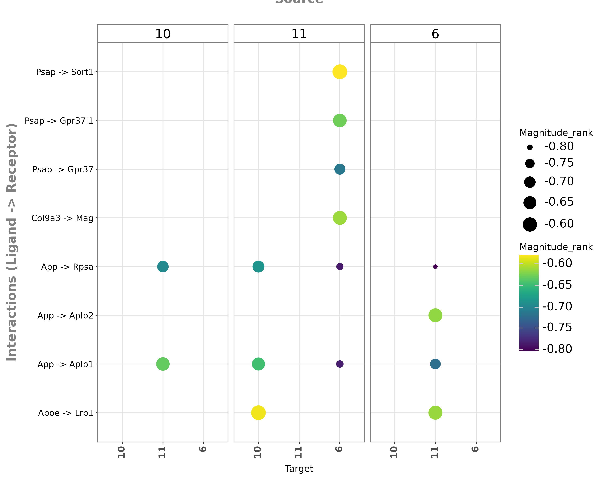

Prepare the tissue
Load a 10x Visium mouse brain section, filter low quality spots and genes, then normalize expression.
SPATIAL TRANSCRIPTOMICS · MOUSE BRAIN
Gene expression can suggest which cells communicate. Tissue position adds a second question: are the predicted partners actually neighbors?
An exploratory, single slide analysis by Eswar MSE

LEIDEN CLUSTERS ON TISSUEThese are counts from the original exploratory run. The screen tests cluster neighborhood enrichment; it does not measure a biological false positive rate.
EXPLORE THE EVIDENCE
Move around the tissue map, then compare it with the interaction plot. The map shows transcriptomic clusters, not identified cell types.
Hover for cluster labels. Scroll or drag inside the plot to zoom and pan. Open full screen

Top ranked cross cluster ligand–receptor candidates after the adjacency screen. Open image
HOW IT WORKS
Load a 10x Visium mouse brain section, filter low quality spots and genes, then normalize expression.
Cluster expression profiles with Leiden and build a spatial neighbor graph from spot coordinates.
Use LIANA+ to rank ligand–receptor candidates across cluster pairs without spatial information.
Retain candidates whose source and target clusters have neighborhood enrichment z > 1.96 in this exploratory analysis.
INTERPRETATION
The adjacency screen prioritizes candidate interactions between spatially associated domains. It gives a more focused shortlist for follow up experiments.
PROJECT REPOSITORY